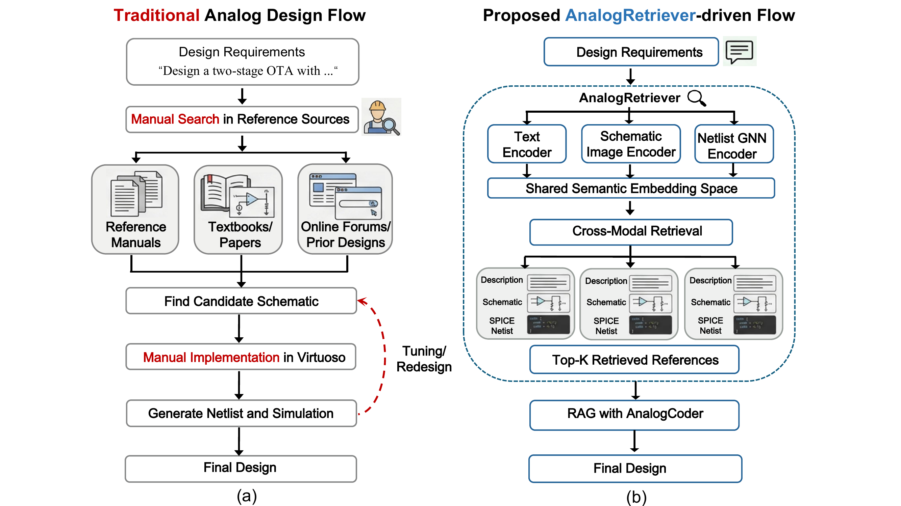
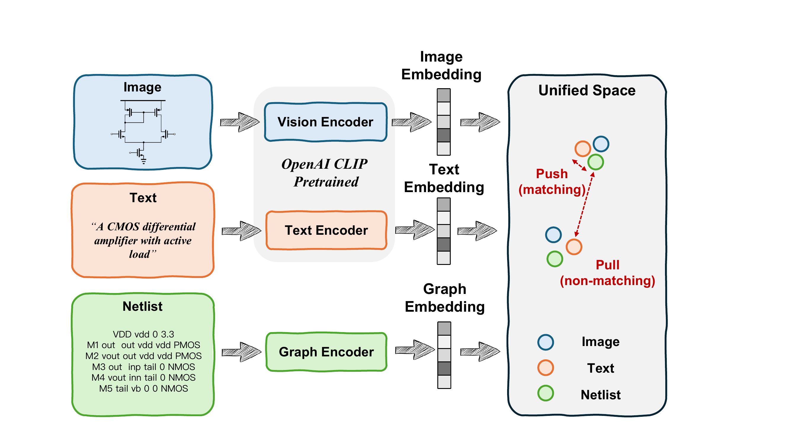
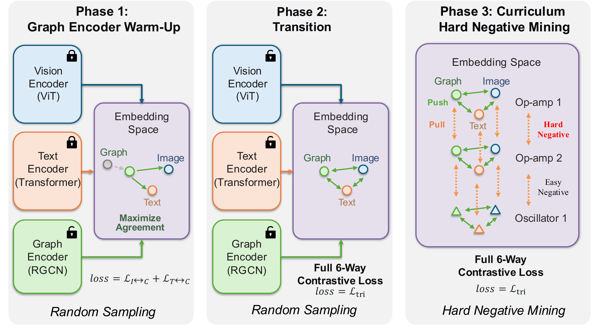
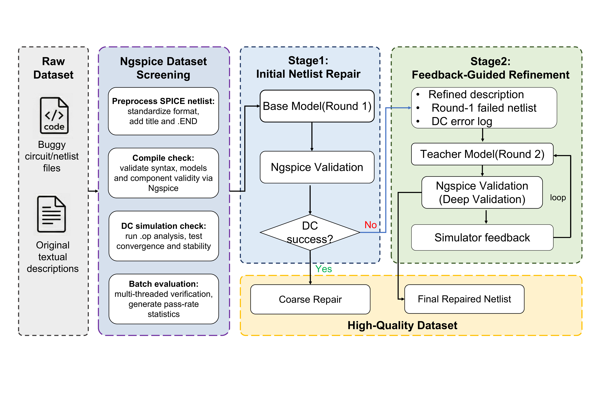
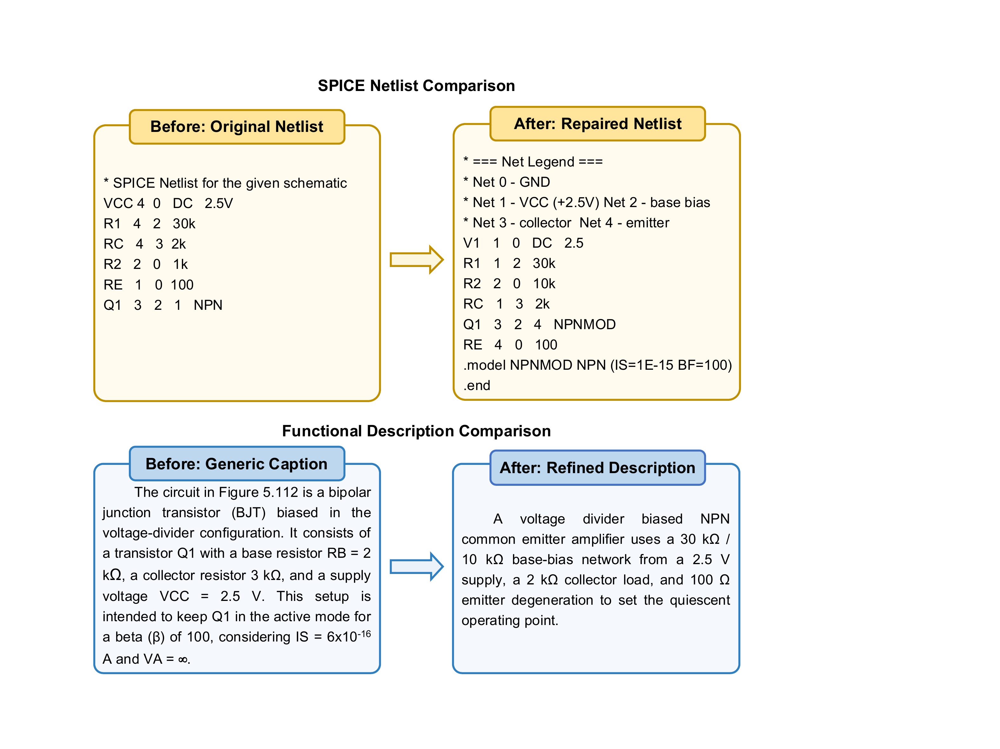
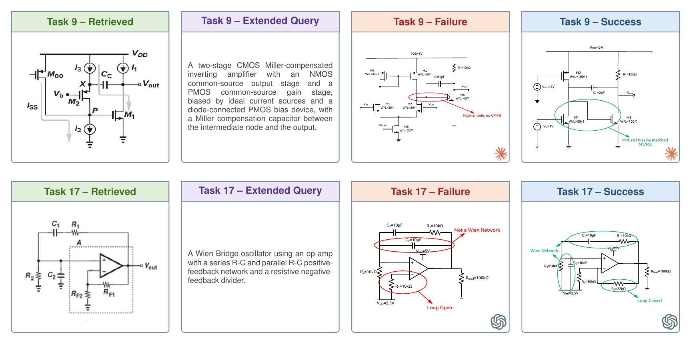

Figure 1. Motivation. (a) In traditional analog design, engineers manually search across fragmented sources by keyword, followed by time-consuming trial-and-error implementation. (b) AnalogRetriever maps text descriptions, schematic images, and SPICE netlists into a shared semantic embedding space, enabling unified cross-modal retrieval and downstream design generation via RAG.
Analog circuit design relies heavily on reusing existing intellectual property (IP), yet searching across heterogeneous representations such as SPICE netlists, schematics, and functional descriptions remains challenging. Existing methods are largely limited to exact matching within a single modality, failing to capture cross-modal semantic relationships. To bridge this gap, we present AnalogRetriever, a unified tri-modal retrieval framework for analog circuit search.
We first build a high-quality dataset on top of Masala-CHAI through a two-stage repair pipeline that raises the netlist compile rate from 22% to 100%. Built on this foundation, AnalogRetriever encodes schematics and descriptions with a vision-language model and netlists with a port-aware relational graph convolutional network (RGCN), mapping all three modalities into a shared embedding space via curriculum contrastive learning. Experiments show that AnalogRetriever achieves an average Recall@1 of 75.2% across all six cross-modal retrieval directions, significantly outperforming existing baselines. When integrated into the AnalogCoder agentic framework as a retrieval-augmented generation module, it consistently improves functional pass rates and enables previously unsolved tasks to be completed. Our code and dataset will be released.
AnalogRetriever maps SPICE netlists (port-aware RGCN), schematic images (ViT), and text descriptions (Transformer) into a shared d=768 embedding space. Images and text are encoded with a pretrained CLIP backbone (bottom 16 of 24 ViT blocks frozen to avoid catastrophic forgetting), while netlists are parsed into heterogeneous graphs with 20 port-aware edge types covering all device terminals (MOSFET drain/gate/source/bulk, BJT collector/base/emitter, diodes, passives, controlled sources, and shared-net connections). The model is trained with tri-modal contrastive learning, an auxiliary circuit-type classification loss, and a three-phase curriculum with hard-negative mining.

Figure 2. AnalogRetriever framework. Three modality-specific encoders map netlists (port-aware RGCN), schematic images (ViT), and text descriptions (Transformer) into a shared embedding space, trained with tri-modal contrastive learning so that matching circuits are pulled together and non-matching ones pushed apart.
Jointly training a randomly initialized RGCN with pretrained CLIP is unstable. We address this with a three-phase curriculum that progressively increases both the number of trainable parameters (RGCN → RGCN+CLIP) and the sampling difficulty (hard-negative ratio α: 0.05 → 0.3):

Figure 3. Three-phase curriculum training. Phase 1 warms up the graph encoder with frozen CLIP weights; Phase 2 enables full six-way contrastive learning with random negatives; Phase 3 introduces hard-negative mining to distinguish topologically similar circuits.
We build upon Masala-CHAI, the largest publicly available tri-modal analog circuit dataset. Our audit revealed severe quality issues: of the 6,371 schematic images, only 22.0% compile under Ngspice and a mere 11.4% pass a DC operating-point check. We design a two-stage LLM-based refinement pipeline, connected by an Ngspice simulator acting as the ground-truth oracle, that audits and repairs the dataset into 6,354 verified triplets with near-100% compilation and DC pass rate.

Figure 4. Two-stage LLM-based dataset refinement pipeline. Stage 1 performs initial netlist repair with Ngspice validation; Stage 2 applies iterative feedback-guided refinement, where a teacher model repairs failed cases using DC error logs until convergence.

Figure 6. Before / after refinement. Top: SPICE netlist with errors and fixes. Bottom: generic vs. refined functional description.
| Stage | # Triplets | Compile (%) | DC Pass (%) |
|---|---|---|---|
| Original MASALA-Chai | 6,069 | 22.0 | 11.4 |
| + Stage 1 (Initial Repair) | 6,371 | 99.2 | 74.1 |
| + Stage 2 (Feedback Refinement) | 6,371 | 100.0 | 99.7 |
| Final (after filtering) | 6,354 | 100.0 | 100.0 |
Table 1. Dataset quality before and after our two-stage refinement — compile rate 22.0% → 100% and DC pass rate 11.4% → 100%.
AnalogRetriever achieves an average Recall@1 of 75.2% across all six cross-modal directions, outperforming the strongest external baseline (CROP, 4.7%) by over 15×. Introducing the code modality yields mutual enhancement: even Text↔Image directions improve by up to +8.7 R@1. Port-aware RGCN adds +1.6 Avg R@1 over the edge-agnostic GCN, and the three-phase curriculum with auxiliary classification adds +7.5 Avg R@1 over the non-curriculum variant. Every direction exceeds 94% at R@5 and 97% at R@10.
| Model | I→C | T→I | T→C | C→I | I→T | C→T | Avg R@1 |
||||||||||||
|---|---|---|---|---|---|---|---|---|---|---|---|---|---|---|---|---|---|---|---|
| R@1 | R@5 | R@10 | R@1 | R@5 | R@10 | R@1 | R@5 | R@10 | R@1 | R@5 | R@10 | R@1 | R@5 | R@10 | R@1 | R@5 | R@10 | ||
| CLIP [13] | 1.2 | 4.6 | 8.9 | 2.2 | 8.2 | 13.5 | 2.9 | 9.7 | 16.2 | 2.9 | 10.1 | 15.7 | 2.7 | 7.6 | 12.9 | 3.2 | 11.2 | 17.4 | 2.5 |
| CROP [14] | 2.3 | 8.4 | 15.0 | 2.2 | 8.2 | 13.5 | 9.2 | 25.8 | 37.1 | 2.4 | 8.5 | 14.2 | 2.7 | 7.6 | 12.9 | 9.4 | 24.7 | 33.0 | 4.7 |
| ChatLS [28] | 0.9 | 5.9 | 11.3 | 2.2 | 8.2 | 13.5 | 9.5 | 24.0 | 35.1 | 1.6 | 6.6 | 10.0 | 2.7 | 7.6 | 12.9 | 7.2 | 20.4 | 31.3 | 4.0 |
| NetTAG [29] | 0.2 | 2.5 | 4.5 | 2.2 | 8.2 | 13.5 | 0.5 | 3.4 | 6.8 | 0.1 | 1.4 | 4.1 | 2.7 | 7.6 | 12.9 | 0.4 | 3.4 | 7.1 | 1.0 |
| TI (Bi-Modal) | – | – | – | 70.5 | 92.9 | 96.8 | – | – | – | – | – | – | 69.8 | 94.1 | 96.7 | – | – | – | – |
| TIC (GCN) | 62.9 | 92.2 | 95.7 | 70.8 | 95.7 | 98.4 | 67.7 | 95.7 | 99.0 | 60.9 | 91.6 | 95.6 | 71.3 | 96.4 | 98.8 | 65.5 | 95.7 | 98.9 | 66.5 |
| TIC (RGCN) | 65.2 | 92.5 | 96.8 | 71.8 | 96.2 | 98.8 | 69.1 | 96.4 | 99.2 | 61.9 | 92.9 | 96.7 | 71.1 | 96.7 | 98.9 | 67.3 | 96.4 | 99.0 | 67.7 |
| AnalogRetriever | 74.7 | 95.5 | 98.1 | 78.2 | 96.8 | 97.9 | 75.6 | 96.3 | 98.6 | 72.0 | 94.8 | 97.9 | 78.5 | 96.7 | 98.3 | 72.4 | 96.7 | 98.3 | 75.2 |
Table 2. Cross-modal retrieval performance on the test set (N=1,000). I: Image (schematic), T: Text (description), C: Circuit (netlist). The upper block shows external baselines; the lower block our ablations. AnalogRetriever is the full model with RGCN and curriculum learning. Cell shading scales with the value within each column; the best per column is bold.
We integrate AnalogRetriever into a retrieval-augmented generation (RAG) pipeline with AnalogCoder, a training-free LLM agent for analog design via PySpice code generation. Evaluated on AnalogCoder's 24-task benchmark across eight LLMs, AnalogRetriever delivers a positive gain on all eight models, averaging +5.6% absolute (62.0% → 67.6%). Augmenting Claude Sonnet 4.6 reaches 86.7%, a new state of the art — the benefit generalizes across model families and scales.
| LLM | Baseline | +RAG | Δ |
|---|---|---|---|
| GPT-4o-mini | 30.8 | 40.8 | +10.0 |
| Nemotron-120B | 34.2 | 37.5 | +3.3 |
| GPT-5.4-mini | 65.0 | 67.5 | +2.5 |
| Gemini-3-Flash | 65.0 | 70.0 | +5.0 |
| Kimi-K2 | 65.0 | 73.3 | +8.3 |
| GLM-4.6 | 73.3 | 80.0 | +6.7 |
| Qwen3.5-397B | 78.3 | 85.0 | +6.7 |
| Claude-Sonnet-4.6 | 84.2 | 86.7 | +2.5 |
| Average | 62.0 | 67.6 | +5.6 |
Table 3. Functional correctness (%) on the AnalogCoder benchmark for eight LLMs, with and without AnalogRetriever. Δ is the absolute gain (avg +5.6).

Figure 7. Case studies. Without retrieval (Failure), the LLM produces structurally incorrect circuits (red). With a retrieved schematic as a topological reference (Success), it generates functionally valid circuits — Task 9: Miller amplifier (0/5 → 5/5); Task 17: Wien-bridge oscillator (0/5 → 4/5).
Try AnalogRetriever interactively on Hugging Face Spaces — query by text, schematic, or netlist and retrieve matching analog circuits across modalities.
@article{wang2026analogretriever,
title = {AnalogRetriever: Learning Cross-Modal Representations for Analog Circuit Retrieval},
author = {Wang, Yihan and Li, Lei and Lai, Yao and Wang, Jing and Lu, Yan},
journal = {arXiv preprint arXiv:2604.23195},
year = {2026}
}